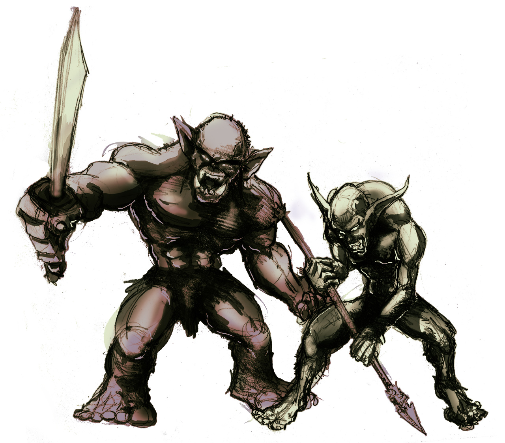

A sword & sorcery simulation rendered in text
 Escape slavery in Mount Bloodrock, an underground enclave of orcs and goblins preparing for war. What will you discover in these dark caves? What mayhem can you wreak on your way out? And how will you former captors remember you?
Tap the Start button below to explore a simulated living (and dying) world inhabited by AI actors, rendered through text. Or scroll down ↓ to learn more about the story.
In the end, it does not really matter how the orcs enslave you — a slave is a slave — but it does say something about your journey. Some people will shiver below a table when an orc's hand grabs them and another binds them with rope. Others squirm in a bag as they're being hauled on a war horse. Yet others fall into primitive traps in the woods.
Not you. You became a slave by attacking an orc war camp, all by yourself.
It felt good at first. You screamed at the top of your lungs, axe raised over your head. It was your revenge. It was suicide, but it had meaning. It was beautiful.
It turned ugly fast. The first orc swatted your axe away easily, kicked you to the ground, and knocked you out cold.
The orcs took you back to their caves in Mount Bloodrock, a dark peak of the Aelphremede mountain range. It is visible from as far as the rich markets of Azerley or the giant corpses of Highwynd, and surrounded by the human kingdom of Grayshore — yet it has never been fully explored. You quickly learned this enclave is a kingdom of its own, with miles of tunnels, war forges, barracks, altars, and hundreds of slaves. You also learned the orcs and the goblins are not acting independently, and that the mountain has an evil of its own.
Your dream of a heroic deed and death became a nightmare of slavery.
This game has been in the making for 7 years. It aims to provide the freedom that one would expect from an open-world RPG game — simulated environment, autonomous AI agents, resources, places to explore — but instead of rendering all that in 2D or 3D graphics, render it in writing. Think Skyrim, in prose.
You and everyone else in this story can make use of 38 different actions in hundreds of unique situations, all tied into a sword & sorcery short story. Most of these actions can fail, and a natural language generation algorithm will make sure the course of events is rendered in human-like prose. In this sword & sorcery adventure, this is mainly visible in the fight scenes. You can learn more about the ideas behind this approach at egamebook.com.
The project is part of the author's evil masterplan to create enjoyable, approachable texts for the coming generation. It's not easy to motivate us humans to read long texts, and with increasing competition from other media, it's only getting harder. But society is better off when people are trained to work with long texts and take in a lot of context. The author, for example, probably owes much of his successful career in engineering and management to the fact that he picked up the 1000+ pages long Lord of the Rings when he was 13.
If this game system, the vision behind it, or the realm of the Dead Prince has piqued your interest, stay tuned for a sequel.
This short story is just a beginning. You'll be able to continue on your journey, explore the kingdom of Grayshore, and maybe even build your own castle.
If you need hints or just want to make sure you explore all the content that this game offers, please download the walkthrough (PDF).
Have you already finished the game? Congratulations! Please tweet about it!
With general questions, please reach out to the author by email or via Twitter. File bugs and issues on GitHub. And don't forget to sign up to the mailing list to keep up to date with the project.
Please don't be shy to share your experience with the game on blogs and social media. Authors love that kind of feedback.
| Writing and Programming | Filip Hracek |
| Illustrations | Juan Pablo Vega |
| Editing |
Ryan Jeffrey Shea Mark Aragona |
| Testing |
mathbrush matt w Jayson Merryfield Alexey Buzdin |